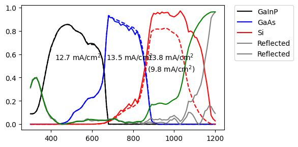
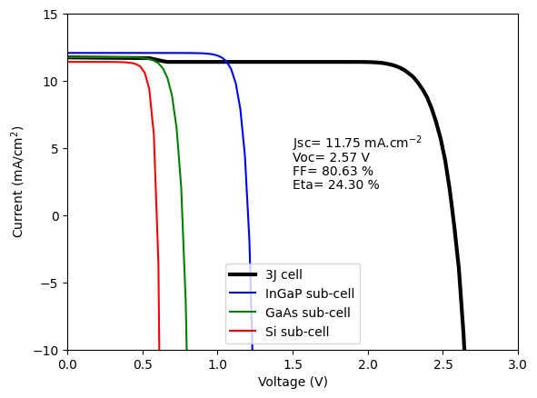
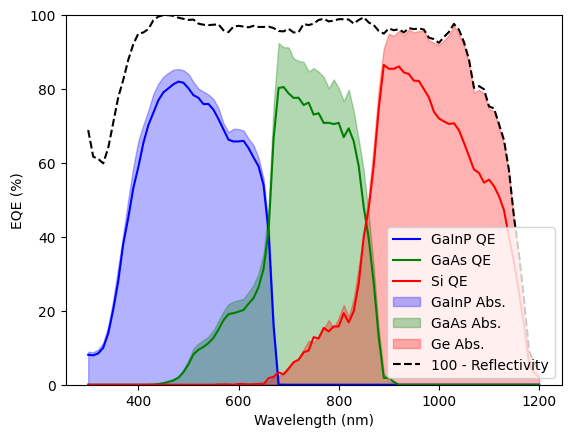

from solcore import material, si
from solcore.absorption_calculator import search_db, download_db
import os
from solcore.structure import Layer
from solcore.light_source import LightSource
from rayflare.ray_tracing import rt_structure
from rayflare.transfer_matrix_method import tmm_structure
from rayflare.textures import planar_surface, regular_pyramids
from rayflare.options import default_options
from solcore.constants import q
import numpy as np
import matplotlib.pyplot as plt
# download_db()Planar III-V epoxy-bonded to textured Si
The structure in this example is based on that of the previous example), but with the planar bottom Si cell replaced by a Si cell with a pyramidal texture, bonded to the III-V top cells with a low-index epoxy/glass layer.
We could use the angular redistribution matrix method as in the previous example - however, because in this example we only need to use TMM and ray-tracing (RT), we can use the ray-tracing method with integrated RT directly (this is generally faster, because we do not need to calculate the behaviour of the surfaces for every angle of incidence).
Setting up
We load relevant packages and define materials, the same as in the previous example.
MgF2_pageid = search_db(os.path.join("MgF2", "Rodriguez-de Marcos"))[0][0];
Ta2O5_pageid = search_db(os.path.join("Ta2O5", "Rodriguez-de Marcos"))[0][0];
SU8_pageid = search_db("SU8")[0][0];
Ag_pageid = search_db(os.path.join("Ag", "Jiang"))[0][0];
epoxy = material("BK7")()
MgF2 = material(str(MgF2_pageid), nk_db=True)();
Ta2O5 = material(str(Ta2O5_pageid), nk_db=True)();
SU8 = material(str(SU8_pageid), nk_db=True)();
Ag = material(str(Ag_pageid), nk_db=True)();
window = material("AlInP")(Al=0.52)
GaInP = material("GaInP")
AlGaAs = material("AlGaAs")
Air = material("Air")()
GaAs = material("GaAs")
Si = material("Si")
Al2O3 = material("Al2O3P")()
Al = material("Al")()Database file found at /Users/z3533914/.solcore/nk/nk.db
1 results found.
pageid shelf book page filepath hasrefractive hasextinction rangeMin rangeMax points
234 main MgF2 Rodriguez-de_Marcos main/MgF2/Rodriguez-de Marcos.yml 1 1 0.0299919 2.00146 960
Database file found at /Users/z3533914/.solcore/nk/nk.db
1 results found.
pageid shelf book page filepath hasrefractive hasextinction rangeMin rangeMax points
475 main Ta2O5 Rodriguez-de_Marcos main/Ta2O5/Rodriguez-de Marcos.yml 1 1 0.0294938 1.51429 212
Database file found at /Users/z3533914/.solcore/nk/nk.db
2 results found.
pageid shelf book page filepath hasrefractive hasextinction rangeMin rangeMax points
2835 other negative_tone_photoresists Microchem_SU8_2000 other/resists/Microchem SU-8 2000.yml 1 0 0.32 0.8 200
2836 other negative_tone_photoresists Microchem_SU8_3000 other/resists/Microchem SU-8 3000.yml 1 0 0.32 1.7 200
Database file found at /Users/z3533914/.solcore/nk/nk.db
1 results found.
pageid shelf book page filepath hasrefractive hasextinction rangeMin rangeMax points
2 main Ag Jiang main/Ag/Jiang.yml 1 1 0.3 2.0 1701We define the layers we will need, as before. We specify the thickness of the silicon (280 \(\mu\)m) and epoxy (1 mm) at the top:
d_Si = 280e-6 # thickness of Si wafer
d_epoxy = 1e-6 # thickness of epoxy. In reality, the epoxy is much thicker, but the exact thickness doesn't matter
# because the material is transparent and we will treat it incoherently.
GaInP_total_thickness = 350e-9
GaAs_total_thickness = 1200e-9
ARC = [Layer(110e-9, MgF2), Layer(65e-9, Ta2O5)]
GaInP_junction = [Layer(20e-9, window), Layer(GaInP_total_thickness, GaInP(In=0.50))]
# 100 nm TJ
tunnel_1 = [Layer(100e-9, AlGaAs(Al=0.8)), Layer(20e-9, GaInP(In=0.5))]
GaAs_junction = [Layer(20e-9, GaInP(In=0.5)), Layer(GaAs_total_thickness, GaAs()), Layer(70e-9, AlGaAs(Al=0.8))]
spacer_ARC = [Layer(80e-9, Ta2O5)]Defining the cell layers
There are three interfaces in the cell which will define the structure to simulate:
- the III-V/epoxy interface, where the epoxy itself will be treated as a bulk layer in the simulation
- the epoxy/Si interface, where the Si has a pyramidal texture (the Si itself is another bulk layer in the simulation).
- the rear surface of the cell, where the Si again has a pyramidal texture (and we assume there is a silver back mirror behind the cell)
These 3 interfaces are defined here, using the pre-defined textures for a planar surface or regular pyramids:
front_layers = ARC + GaInP_junction + tunnel_1 + GaAs_junction + spacer_ARC
front_surf = planar_surface(interface_layers = front_layers, prof_layers=np.arange(1, len(front_layers)+1))
Si_front = regular_pyramids(elevation_angle=50, upright=True)
Si_back = regular_pyramids(elevation_angle=50, upright=False)Now we set relevant options for the solver. We set the number of rays to trace at each wavelength (more rays will make the result less noisy, but increase computation time) and whether to calculate the absorption profile in the bulk layers (no, in this case). The randomize_surface options determines whether the ray keeps track of its positions in the unit cell while travelling between surfaces; we set this to False to mimic random pyramids.
options = default_options()
wl = np.arange(300, 1201, 10) * 1e-9
AM15G = LightSource(source_type="standard", version="AM1.5g", x=wl, output_units="photon_flux_per_m")
options.wavelength = wl
options.project_name = "III_V_Si_cell"
# options for ray-tracing
options.randomize_surface = True
options.n_rays = 1000
options.bulk_profile = FalseDefining the structures
Finally, we define the ray-tracing structure we will use, using the interfaces, bulk materials, and options set above. Because we want to calculate the reflection/absorption/transmission probabilities at the front surface using TMM, we set the use_TMM argument to True. We also define a completely planar cell with the same layer thicknesses etc. to compare and evaluate the effect of the textures Si surfaces.
optical_structure = rt_structure(
textures=[front_surf, Si_front, Si_back],
materials=[epoxy, Si()],
widths=[d_epoxy, d_Si],
incidence=Air,
transmission=Ag,
options=options,
use_TMM=True,
save_location="current", # lookup table save location
overwrite=True, # whether to overwrite any previously existing results, if found
)
# options for TMM
options.coherent = False
options.coherency_list = len(front_layers)*['c'] + ['i']*2
planar_optical_structure = tmm_structure(
layer_stack = front_layers + [Layer(d_epoxy, epoxy), Layer(d_Si, Si())],
incidence=Air,
transmission=Ag,
)INFO: Pre-computing TMM lookup table(s)Database file found at /Users/z3533914/.solcore/nk/nk.db
Material main/MgF2/Rodriguez-de Marcos.yml loaded.
Database file found at /Users/z3533914/.solcore/nk/nk.db
Material main/MgF2/Rodriguez-de Marcos.yml loaded.
Database file found at /Users/z3533914/.solcore/nk/nk.db
Material main/Ta2O5/Rodriguez-de Marcos.yml loaded.
Database file found at /Users/z3533914/.solcore/nk/nk.db
Material main/Ta2O5/Rodriguez-de Marcos.yml loaded.Calculations
Calculate the R/A/T for the planar reference cell:
tmm_result = planar_optical_structure.calculate(options=options)
GaInP_A_tmm = tmm_result['A_per_layer'][:,3]
GaAs_A_tmm = tmm_result['A_per_layer'][:,7]
Si_A_tmm = tmm_result['A_per_layer'][:,len(front_layers)+1]
Jmax_GaInP_tmm = q*np.trapz(GaInP_A_tmm*AM15G.spectrum()[1], x=wl)/10
Jmax_GaAs_tmm = q*np.trapz(GaAs_A_tmm*AM15G.spectrum()[1], x=wl)/10
Jmax_Si_tmm = q*np.trapz(Si_A_tmm*AM15G.spectrum()[1], x=wl)/10Calculate the R/A/T for the textured cell:
rt_result = optical_structure.calculate(options=options)
GaInP_absorption_ARC = rt_result['A_per_interface'][0][:,3]
GaAs_absorption_ARC = rt_result['A_per_interface'][0][:,7]
Si_absorption_ARC = rt_result['A_per_layer'][:,1]
Jmax_GaInP = q*np.trapz(GaInP_absorption_ARC*AM15G.spectrum()[1], x=wl)/10
Jmax_GaAs = q*np.trapz(GaAs_absorption_ARC*AM15G.spectrum()[1], x=wl)/10
Jmax_Si = q*np.trapz(Si_absorption_ARC*AM15G.spectrum()[1], x=wl)/10Plotting the results
Finally, we plot the results; the solid lines show the results for the textured Si cell (calculated using ray-tracing), the dashed lines for the planar cell (calculated using TMM). The maximum possible currents are shown in the plot, with the value in brackets for Si being for the planar cell.
plt.figure(figsize=(6,3))
plt.plot(wl * 1e9, GaInP_absorption_ARC, "-k", label="GaInP")
plt.plot(wl * 1e9, GaAs_absorption_ARC, "-b", label="GaAs")
plt.plot(wl * 1e9, Si_absorption_ARC, "-r", label="Si")
plt.plot(wl * 1e9, GaInP_A_tmm, "--k")
plt.plot(wl * 1e9, GaAs_A_tmm, "--b")
plt.plot(wl * 1e9, Si_A_tmm, "--r")
plt.plot(wl * 1e9, rt_result['R'], '-', color='grey', label="Reflected")
plt.plot(wl * 1e9, tmm_result['R'], '--', color='grey')
plt.text(420, 0.55, r"{:.1f} mA/cm$^2$".format(Jmax_GaInP))
plt.text(670, 0.55, r"{:.1f} mA/cm$^2$".format(Jmax_GaAs))
plt.text(870, 0.55, r"{:.1f} mA/cm$^2$".format(Jmax_Si))
plt.text(870, 0.45, r"({:.1f} mA/cm$^2)$".format(Jmax_Si_tmm))
plt.legend(bbox_to_anchor=(1.05, 1), loc=2, borderaxespad=0.)
plt.tight_layout()
plt.show()
Questions/challenges
- Does it make sense to do a ray-tracing calculation for short wavelengths? For this structure, can you speed up the calculation and avoid the random noise at short wavelengths?
- How much current is lost to parasitic absorption in e.g. tunnel junctions, window layers etc.?
- How can we reduce reflection at the epoxy interfaces?
- If the epoxy/glass layer is much thicker than the relevant incident wavelengths, and not absorbing, does the exact thickness matter in the simulation?
- What happens if only the rear surface is textured? Would a structure without the front texture have other advantages?
- Why does the Si have lower absorption/limiting current in this structure compared to the previous example?
Electrical calculation
Now we can also use RayFlare’s optical results to run an electrical simulation in Solcore. To use the depletion approximation (DA) or drift-diffusion (PDD) solvers, we need the front surface reflectivity, and a depth-dependent absorption/generation profile. While so far we have been plotting total absorption per layer, RayFlare can calculate depth-dependent profiles too.
We need to import some more things, and set some options for solar_cell_solver, as we did before. We must set the optics_method option to 'external', since we want to pass the values calculated by RayFlare into Solcore.
from solcore.solar_cell import SolarCell, Junction
from solcore.solar_cell_solver import solar_cell_solver
from rayflare.utilities import make_absorption_function
from solcore.state import State
options = State(options) # convert the RayFlare options to Solcore options object so Solcore will recognise it
V = np.linspace(-3, 0, 100)
options.optics_method = 'external'
options.voltages = V
options.internal_voltages = np.linspace(-4, 1, 200)
options.light_iv = True
options.mpp = True
options.light_source = AM15G
options.recalculate_absorption = True/Users/z3533914/.pyenv/versions/3.11.5/lib/python3.11/site-packages/solcore/registries.py:73: UserWarning: Optics solver 'RCWA' will not be available. An installation of S4 has not been found.
warn(Now, previously we only calculate total reflection/absorption/transmission. Now we want to calculate depth-dependent absorption (generation) profiles at every wavelength. We set some options for RayFlare for this (we can use the same options object) and then ask RayFlare to calculate the absorption profile:
%%capture
#| output: false
options.bulk_profile = True
options.depth_spacing = 1e-9
options.depth_spacing_bulk = 10e-9
profile_data = optical_structure.calculate_profile(options)INFO: Calculating next wavelength...
INFO: Calculating next wavelength...
INFO: Calculating next wavelength...
INFO: Calculating next wavelength...
INFO: Calculating next wavelength...
INFO: Calculating next wavelength...
INFO: Calculating next wavelength...
INFO: Calculating next wavelength...
INFO: Calculating next wavelength...
INFO: Calculating next wavelength...
INFO: Calculating next wavelength...
INFO: Calculating next wavelength...
INFO: Calculating next wavelength...
INFO: Calculating next wavelength...
INFO: Calculating next wavelength...
INFO: Calculating next wavelength...
INFO: Calculating next wavelength...
INFO: Calculating next wavelength...
INFO: Calculating next wavelength...
INFO: Calculating next wavelength...
INFO: Calculating next wavelength...
INFO: Calculating next wavelength...
/Users/z3533914/.pyenv/versions/3.11.5/lib/python3.11/site-packages/joblib/externals/loky/process_executor.py:752: UserWarning: A worker stopped while some jobs were given to the executor. This can be caused by a too short worker timeout or by a memory leak.
warnings.warn(
INFO: Calculating next wavelength...
INFO: Calculating next wavelength...
INFO: Calculating next wavelength...
INFO: Calculating next wavelength...
INFO: Calculating next wavelength...
INFO: Calculating next wavelength...
INFO: Calculating next wavelength...
INFO: Calculating next wavelength...
INFO: Calculating next wavelength...
INFO: Calculating next wavelength...
INFO: Calculating next wavelength...
INFO: Calculating next wavelength...
INFO: Calculating next wavelength...
INFO: Calculating next wavelength...
INFO: Calculating next wavelength...
INFO: Calculating next wavelength...
INFO: Calculating next wavelength...
INFO: Calculating next wavelength...
INFO: Calculating next wavelength...
INFO: Calculating next wavelength...
INFO: Calculating next wavelength...
INFO: Calculating next wavelength...
INFO: Calculating next wavelength...
INFO: Calculating next wavelength...
INFO: Calculating next wavelength...
INFO: Calculating next wavelength...
INFO: Calculating next wavelength...
INFO: Calculating next wavelength...
INFO: Calculating next wavelength...
INFO: Calculating next wavelength...
INFO: Calculating next wavelength...
INFO: Calculating next wavelength...
INFO: Calculating next wavelength...
INFO: Calculating next wavelength...
INFO: Calculating next wavelength...
INFO: Calculating next wavelength...
INFO: Calculating next wavelength...
INFO: Calculating next wavelength...
INFO: Calculating next wavelength...
INFO: Calculating next wavelength...
INFO: Calculating next wavelength...
INFO: Calculating next wavelength...
INFO: Calculating next wavelength...
INFO: Calculating next wavelength...
INFO: Calculating next wavelength...
INFO: Calculating next wavelength...
INFO: Calculating next wavelength...
INFO: Calculating next wavelength...
INFO: Calculating next wavelength...
INFO: Calculating next wavelength...
INFO: Calculating next wavelength...
INFO: Calculating next wavelength...
INFO: Calculating next wavelength...
INFO: Calculating next wavelength...
INFO: Calculating next wavelength...
INFO: Calculating next wavelength...
INFO: Calculating next wavelength...
INFO: Calculating next wavelength...
INFO: Calculating next wavelength...
INFO: Calculating next wavelength...
INFO: Calculating next wavelength...
INFO: Calculating next wavelength...
INFO: Calculating next wavelength...
INFO: Calculating next wavelength...
INFO: Calculating next wavelength...
INFO: Calculating next wavelength...
INFO: Calculating next wavelength...
INFO: Calculating next wavelength...
INFO: Calculating next wavelength...WARNING: The RCWA solver will not be available because an S4 installation has not been found.
WARNING: The RCWA solver will not be available because an S4 installation has not been found.
WARNING: The RCWA solver will not be available because an S4 installation has not been found.
WARNING: The RCWA solver will not be available because an S4 installation has not been found.
WARNING: The RCWA solver will not be available because an S4 installation has not been found.
WARNING: The RCWA solver will not be available because an S4 installation has not been found.We not only want to calculate the absorption profile in the bulk layers (the Si) but also the front surface layers, since the GaInP and GaAs junctions are defined as part of the front interface. This was the reason for defining the surface as:
front_surf = planar_surface(interface_layers = front_layers, prof_layers=np.arange(1, len(front_layers)+1))near the start of the script. The prof_layers argument tells RayFlare we want to calculate the absorption profile in the surface layers, in addition to the total absorption.
In order for Solcore to use the information we just calculated, it must be in the right format. We need to provide Solcore with two things: the reflectance, and a function which describes the depth-dependent absorption. This function expects an argument which is an array of positions, and returns the generation (units of \(m^{-1}\)) at each position and each wavelength. Fortunately, RayFlare has a function which takes your layer structure, results, and user options, and creates such a function for you:
depths, external_optics_func = make_absorption_function(profile_data, optical_structure, options)
options.position = depthsWARNING: The RCWA solver will not be available because an S4 installation has not been found.Previously, we defined RayFlare rt_structure and tmm_structure objects to do the optical calculation. For the cell calculation, we need a Solcore SolarCell object, which needs different information (such as doping levels) to perform the electrical calculation. Here we create the junctions, making sure that the total layer thicknesses of each material are the same as they were in the ray-traced structure.
GaInP_emitter_thickness = 100e-9
GaAs_emitter_thickness = 200e-9
Si_emitter_thickness = 1e-6
GaInP_base_thickness = GaInP_total_thickness - GaInP_emitter_thickness
GaAs_base_thickness = GaAs_total_thickness - GaAs_emitter_thickness
Si_base_thickness = d_Si - Si_emitter_thickness
GaInP_junction = Junction([
Layer(20e-9, material("AlInP")(Al=0.52), Nd=si("1e18cm-3"), role="window"), # window
Layer(GaInP_emitter_thickness, GaInP(In=0.50, Nd=si("1e18cm-3"), hole_diffusion_length=si("200nm")), role="emitter"), # emitter
Layer(GaInP_base_thickness, GaInP(In=0.50, Na=si("1e17cm-3"), electron_diffusion_length=si("300nm")), role="base"), # base
], kind="DA") # TJ
GaAs_junction = Junction([
Layer(20e-9, GaInP(In=0.5, Nd=si("1e18cm-3")), role="window"), # window
Layer(GaAs_emitter_thickness, GaAs(Nd=si("1e18cm-3"), hole_diffusion_length=si("250nm")), role="emitter"), # emitter
Layer(GaAs_base_thickness, GaAs(Na=si("9e16cm-3"), electron_diffusion_length=si("1000nm")), role="base"), # basee
Layer(70e-9, AlGaAs(Al=0.8, Na=si("4e18cm-3")), role="bsf") # BSF
], kind="DA")
Si_junction = Junction([
Layer(Si_emitter_thickness, Si(Nd=si("1e19cm-3"), hole_diffusion_length=si("1000nm")), role="emitter"),
Layer(Si_base_thickness, Si(Na=si("1e16cm-3"), electron_diffusion_length=si("250um")), role="base")],
kind="DA")
solar_cell = SolarCell(
ARC + [GaInP_junction] + tunnel_1 + [GaAs_junction] + spacer_ARC + [Layer(d_epoxy, epoxy)] + [Si_junction],
external_reflected=rt_result["R"],
external_absorbed=external_optics_func)Finally, we are ready to the our cell calculations; first, we calculate and plot the light I-V:
solar_cell_solver(solar_cell, 'iv', options)
plt.figure(2)
plt.plot(-V, -solar_cell.iv['IV'][1]/10, 'k', linewidth=3, label='3J cell')
plt.plot(-V, solar_cell(0).iv(V)/10, 'b', label='InGaP sub-cell')
plt.plot(-V, solar_cell(1).iv(V)/10, 'g', label='GaAs sub-cell')
plt.plot(-V, solar_cell(2).iv(V)/10, 'r', label='Si sub-cell')
plt.text(1.5, 5,f'Jsc= {abs(solar_cell.iv.Isc/10):.2f} mA.cm' + r'$^{-2}$')
plt.text(1.5, 4,f'Voc= {abs(solar_cell.iv.Voc):.2f} V')
plt.text(1.5, 3,f'FF= {solar_cell.iv.FF*100:.2f} %')
plt.text(1.5, 2,f'Eta= {solar_cell.iv.Eta*100:.2f} %')
plt.legend()
plt.ylim(-10, 15)
plt.xlim(0, 3)
plt.ylabel('Current (mA/cm$^2$)')
plt.xlabel('Voltage (V)')
plt.show()INFO: Solving optics of the solar cell...Solving IV of the junctions...
Solving IV of the tunnel junctions...
Solving IV of the total solar cell...
And now the QE (we also plot the total absorption in each junction for comparison with the EQE):
solar_cell_solver(solar_cell, 'qe', options)
plt.figure(1)
plt.plot(wl * 1e9, solar_cell(0).eqe(wl) * 100, 'b', label='GaInP QE')
plt.plot(wl * 1e9, solar_cell(1).eqe(wl) * 100, 'g', label='GaAs QE')
plt.plot(wl * 1e9, solar_cell(2).eqe(wl) * 100, 'r', label='Si QE')
plt.fill_between(wl * 1e9, GaInP_absorption_ARC * 100, 0, alpha=0.3,
label='GaInP Abs.', color='b')
plt.fill_between(wl * 1e9, GaAs_absorption_ARC * 100, 0, alpha=0.3,
label='GaAs Abs.', color='g')
plt.fill_between(wl * 1e9, Si_absorption_ARC * 100, 0, alpha=0.3,
label='Ge Abs.', color='r')
plt.plot(wl*1e9, 100*(1-solar_cell.reflected), '--k', label="100 - Reflectivity")
plt.legend()
plt.ylim(0, 100)
plt.ylabel('EQE (%)')
plt.xlabel('Wavelength (nm)')
plt.show()INFO: Solving optics of the solar cell...Solving QE of the solar cell...